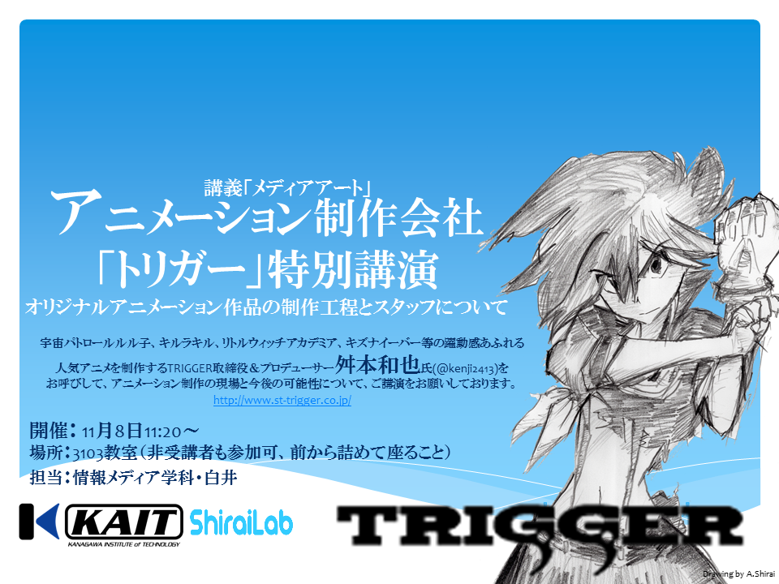

News
-
natsuaki wrote a new post, 2016年度後期セミナーブログ馬場第3回, on the site 白井研セミナー 3年 7か月前
皆さんおはようございます。馬場夏昭です。DCEXPOに行ってきました。
普段からあまり遠くには行かないので、自分の住んでる県から離れるだけで遠足気分です。
生まれて初めて DCEXPOに行ったのですが、今まで何故行かなかったのだろうと軽く後悔するくらい楽しい場所でした。
色々な学校や企業が最先端の技術を使って面白いものを作っていたのでいくつか紹介していきます。
まずは東京大学の苗村研究室さんの[…]
-
otaka wrote a new post, 2016年後期セミナー2回 1423148大塚高弘のやりたい事, on the site 白井研セミナー 3年 7か月前
今週は、研究室で開発されているプロジェクトを見ました。
Real Baby、漫画ジェネレーター、VR内と人を撮るカメラ等です。私がやりたい事は、特にありませんが、コーディングであれば少しは協力出来るかもしれません。
今回は短文で失礼します。

-
aoia wrote a new post, ノート制作プロジェクト2017 企画書2, on the site 白井研セミナー 3年 7か月前
Webサイト「書きま帳＋」（http://www.kakimacho.jp/） を利用して作成します．
最低部数 50部，1部 50ページからとなっています．
■表紙デザイン案（東田）左部分が表１（表紙）右部分が表４（裏表紙）になっており，広げると1枚のイラストになるデザインです．
白井研での研究内容やカレンダーで拝見した画像等，印象的だったものをイラストとして配置しています．
現在（11/12[…]
-
aoia wrote a new post, ノート制作プロジェクト2017 企画書, on the site 白井研セミナー 3年 7か月前
Webサイト「書きま帳＋」（http://www.kakimacho.jp/） を利用して作成します．
最低部数 50部，1部 50ページからとなっています．
■表紙デザイン案（東田）左部分が表１（表紙）右部分が表４（裏表紙）になっており，広げると1枚のイラストになるデザインです．
白井研での研究内容やカレンダーで拝見した画像等，印象的だったものをイラストとして配置しています．
現在（[…]
-
shirai wrote a new post, エンタテイメントコンピューティング2016で発表します, on the site Shirai Lab 3年 7か月前
情報処理学会 エンタテインメントコンピューティング研究会(SIG-EC)主催「Entertainment Computing 2016」において以下の2件の発表を行います。
榊原 諒, 白井 暁彦：RTSゲームのプレイログ分析によるプレイヤー養成システム, エンタテインメントコンピューティングシンポジウム2016論文集,2016,42-45 (2016-11-05), Web
古田 真緒 ,[…]
-
我妻 大樹 wrote a new post, IVRC決勝大会振り返り, on the site Real Baby – Real Family 3年 7か月前
こんにちは、ハード担当の我妻と代表の望月です。
今回は決勝大会を振り返ってみたいと思います。———– 前日（10/28）———–
開場時間が10：00～なのでなるべく早く会場入りしたいところですが、本厚木にある大学から東京テレポートには二時間かかります。
メンバ[…]
-
otaka wrote a new post, 2016年後期セミナー4回 1423148大塚高弘のExpixel進捗報告, on the site 白井研セミナー 3年 7か月前
先週は、科学館の裏の話と就職関係の話を白井先生が話してくれました。
私がこれから関わるプロジェクトは、ExPixelコンテンツの新規実装です。
今週の進捗は企画を立案しました。・前提条件
(MangaGeneratorと比べて)人気無く、来年に展示出来なくなるかもしれず、余裕が無い。
コンテンツのソースコードは一切無い(MPEG変換なので)。
建築、図面、掛軸、リビング、ビジネスに使えるコンテンツが欲しい。
手で動かす等[…] -
kobayu wrote a new post, 2016年後期セミナー ブログ第2回 DCEXPO2016の感想, on the site 白井研セミナー 3年 7か月前
先日、10月29日(土)に日本科学未来館で開催されている「DCEXPO2016」に行って来た
最初は7Fにある展示物の見学をし、その後
1Fのエリアの見学の際にAI侍
7Fでは
8KVRモニター
FOVE
臨死体験
VRと鏡を使ったホラー
上記5つの体験をした
また1Fではロボットを使った戦略ゲームの説明(未完成のため体験できなかった)やAI侍と言ったもの体験、見学をした。
まず8KVRモニターでは[…]
-
aoia wrote a new post, 2016年度後期セミナーブログ第2回／有賀安央衣, on the site 白井研セミナー 3年 7か月前
今回のセミナーでは，白井研究室で制作中のVRコンテンツと行っている研究，DCEXPOについて紹介していただきました．
IVRCに向けた作品である「リアルベイビー／リアルファミリー」は前回体験させてもらったときよりも格段にレベルアップしていました．赤ちゃんに声が付いていたり，部屋のモデルもより凝ったものになっていたりと，とても驚きました．完成品もぜひ体験してみたいです．
Laval Virtualを紹介するコンテンツはグリー[…]
-
aoia wrote a new post, 2016年度後期セミナーブログ 第4回 DCEXPO2016＆日本科学未来館見学レポート／有賀安央衣, on the site 白井研セミナー 3年 7か月前
10月27，28日の午前中にDCEXPOと日本科学未来館の見学に行ってきました．ただ，合計4時間の見学では到底時間が足りず，そのすべてを観ることはできませんでした．
今回は見学できた中で印象に残ったものを書いていきたいと思います．
DCEXPO2016で一番印象に残ったのは，慶応義塾大学の「dePENd」です．机内に仕込まれた磁石をコンピュータで制御することでテーブルの上のボールペンを動かし，絵を描くというものでした．コン[…]
-
東田 茉莉花 wrote a new post, #2-研究室紹介，やりたいこと（東田茉莉花）, on the site 白井研セミナー 3年 7か月前
こんにちは，東田です．
前回のセミナーでは，現在白井研で制作を行っている研究物の紹介をしていただきました．
また，印刷物等の説明もさらりと行い，やりたいことについて考えるようにとの課題が出されました．
……一応メモを取ったのですが，間違っていそうで心配ですね．
「題名未定」
VRイベント（Laval Virtual）の紹介をVRを用いて行う…といったもののようです．目玉なのは，コントローラーに取り付けられている[…]
-
otaka wrote a new post, 2016年後期セミナー3回 1423148大塚高弘の今週の研究室, on the site 白井研セミナー 3年 7か月前
今週は、研究室にフランスからＩＶＲＣに参加しているチームが居ました。
英会話は上手くないのですが、It’s Beautifull! 等と声を掛けたところ、笑って返してくれました。
本当に、超美しいコンテンツでした。
何故日本人チームは、このような美しいコンテンツを開発せず、下らない物ばかり作っているのでしょうか。
（しか[…] -
kobayu wrote a new post, カレンダー制作プロジェクト2017 企画案, on the site 白井研セミナー 3年 7か月前
まずカレンダー制作は下記サイトで行う
次に、カレンダー制作における5W1Hを考える
When・・・来年の2017年から
Where・・・個人の部屋、リビング、研究室
Who・・・研究室に所属しているメンバーおよび、OB,OGまたは研究室に関連がある人物
What・・・カレンダー制作
Why・・・2016年の後期セミナーの課題として
How・・・チームで話し合い、専用サイトで作る。
次に、カレンダーの[…]

-
shirai wrote a new post, 11/8 講義「メディアアート」 特別講演：TRIGGER取締役＆プロデューサー 舛本和也氏, on the site Shirai Lab 3年 7か月前
講義「メディアアート」11月8日の第7講は、「宇宙パトロールルル子」、「キルラキル」、「リトルウィッチアカデミア」、「キズナイーバー」等の躍動感あふれる人気アニメを制作するアニメーション制作会社「TRIGGER」より、取締役＆プロデューサー 舛本和也氏(@kenji2413)をお呼びして、特別講演です。
演題：オリジナルアニメーション作品の制作工程とスタッフについて
オリジナルアニメーション作品の制作工程とスタッフについて[…]  -
aoia wrote a new post, 2016年度後期セミナーブログ第3回名刺交換とコンテンツ体験／有賀安央衣, on the site 白井研セミナー 3年 7か月前
今回は名刺交換の練習と，先輩が研究中の将棋の次の手を示してくれる装置やLaval Virtual招待作品であるフランス代表の「A night stroll in the Alps」の体験をしました．
名刺交換は来年度から神奈川工科大学の博士課程に入学するシェ レックスさんとやりました．初対面の相手と話すときは頭が真っ白になって母国語である日本語でも言葉が出てこない[…]
-
natsuaki wrote a new post, 2016年度後期セミナーブログ馬場第2回, on the site 白井研セミナー 3年 7か月前
皆さんおはようございます馬場夏昭です。タイトルに名字入れました。
2回目のセミナーが終わりました。今回はDCEXPOに出展する作品を体験させていただいたり、今後のセミナーで行う事の説明がおこなわれました。
Manga Generatorという漫画の世界に入り込める作品の改良や、研究室のカレンダーやオリジナルノートの作成等、色々なことからやるものを選ぶみたいです。
どれも絵心やデザインをする力が問われそうですが[…]

-
sugatomo wrote a new post, 2016後期セミナー第1目-自己紹介 （1423144）, on the site 白井研セミナー 3年 7か月前
はじめまして、1423144 菅原知昭です。後期どうぞよ[…]
-
東田 茉莉花 wrote a new post, #1-自己紹介（東田）, on the site 白井研セミナー 3年 7か月前
1423153の東田茉莉花です．半期よろしくお願いします．
後期セミナーの一回目ということで，前回の振り返りと自己紹介，エゴサーチ結果についてを書いていきます．
前回の振り返り
初めての顔合わせと自己紹介をしました．既に三年生となり就活も目前だからか．
全体的に「社会にこういった形で出たい！」という志を感じました．
確かにそろそろ危機感を覚える頃ですね．全くもって他人事じゃないのですが．
あとは…就活の際のポ[…]
-
錦澤 竜也 wrote a new post, 第６回セミナー 就活サイト解禁 IVRC企画書の書き方, on the site 白井研セミナー 3年 7か月前
s1423115[…]
-
錦澤 竜也 wrote a new post, 第１０回 遊びについて考える, on the site 白井研セミナー 3年 7か月前
1423115 錦澤です。第１０回セミナーで学んだことを書いていきたいと思います。
第１０回セミナーでは、神奈川青少年教育センターの清水さんと遊びについてディスカッションを行いまた名刺交換を行いました。名刺交換では事前に作った名刺を交換しました。
名刺交換については目を見て名刺交換をするとよいと教えてもらいました。
初めての名刺交換だったのでとても緊張しましたが、社会人になる前に経験できたのはよかった[…]

- もっと読み込む